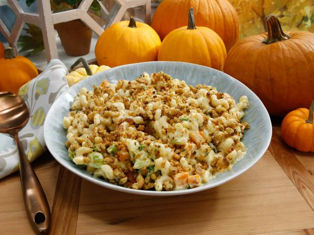

Mac and Cheese Recipe

Mac and Cheese Description:
Mac and Cheese is another great thanksgiving meal that goes well with other dishes.
This warm and toasty meal will taste amazing during the holdiay season!
Ingredients
- Elbow macaroni
- Cheese sliced
- Milk
- Eggs
- Ground black pepper
Steps to Make:
- Heat oven to 300 Degrees.
- Layer macaroni and cheese on top of each other.
- Mix eggs and milk and put over macaroni.
- Bake in oven until right consistency and season with pepper afterwards.